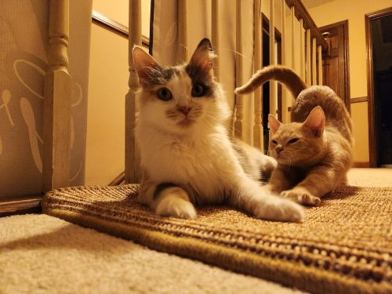
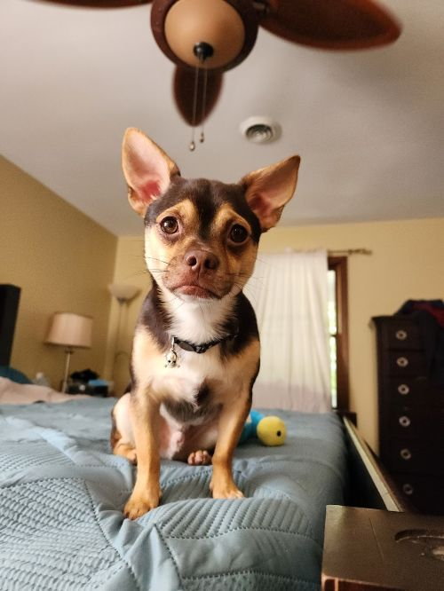

I am a big cat fan. Cats have been a part of my life for as long as I can remember. They are friendly, great cuddlers, and even better listeners. So, it's safe to say that I have always had a better connection with cats than dogs. Currently we have five cats, and each have their own personalities. They all are very playful, and three of them are great listeners. Mama kitty is the proud mother of Mr. Fluffy pants, Murder Mittens, and Ozzy Ozborn (named after the singer). Our last cat, Jackel likes to be alone, and doesn't enjoy the company of others. I think I am partial to my cats, but I think they are quite swell.
Not to say that dogs are bad, but it is hard to compare them to cats. Dogs need consistent attention, along with more time outdoors. We currently have a dog, a chihuahua (which barely counts in my opinion), and he is awesome. He is incredibly friendly to other animals and despises other humans. Other than the fact that Pippin, our dog, barks at everything known to mankind, he is practically a cat in many ways.
| Cat | Description | Personalities |
|---|---|---|
| Mr. Fluffy Pants | An orange and white fluffy cat | A heart of gold that can do no wrong |
| Mr. Murder Mittens | Orange tabby cat | Pain in the butt |
| Ozzy Ozborn | Grey smooshed face tabby | A true scaredy cat |
| Mama Kitty | White, Grey, and even hints of brown (fluff 100) | Loves food, like a little too much |
| Jackel | Black cat | Would rather be anywhere else |
| Pippin | Looks like scrappy doo | A chichuhua that almost acts like a cat |